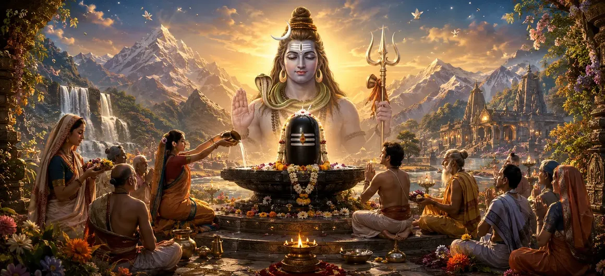

Devotion to Lord Shiva
The forty-fifth chapter of the Vayaviya Samhita illuminates the supreme power, nature, and liberating grace of pure devotion (Bhakti) toward Lord Shiva.
Rishi Vayu explains how unswerving love, remembrance, and surrender to the Supreme Lord dissolve all karmic bonds and grant ultimate peace.
This chapter extols Bhakti as the crowning jewel of spiritual practice that unites the individual soul with Supreme Consciousness.
Chapter 45 Highlights
Supreme Bhakti
Explores the transformative nature of pure devotion to Lord Shiva.
Dissolving Ego
Shows how devotion melts pride and purifies the inner heart.
Divine Grace
Reveals that sincere love instantly attracts the Lord's compassion.
Karmic Freedom
Teaches how devotion cuts through the knots of worldly bondage.
Spiritual Union
Presents Bhakti as the direct path to eternal peace and liberation.
Narrative Flow
Leads into Chapter 46 on Shaiva Knowledge.
Core Topics in This Chapter
The True Nature of Devotion to Shiva
Rishi Vayu explains that devotion to Lord Shiva is not a superficial ritual but an intense, continuous flow of love from the heart toward the Supreme.
When the mind naturally dwells upon Shiva's form, name, and attributes day and night, true Bhakti takes root.
Purification of the Mind Through Bhakti
Pure devotion acts as a sacred fire that burns away mental impurities, ego, desires, and the dualities of joy and sorrow.
As the heart becomes pure, the divine reflection of the Lord shines brightly within.
Attracting the Compassion of the Lord
Lord Shiva is known as Ashutosh—easily pleased. He is moved not by grand intellectual displays, but by simple, sincere, and tearful devotion.
The devotee who loves Shiva unconditionally receives His unfailing protection and grace.
Complete Surrender and Ultimate Liberation
Surrendering one's ego and actions at the feet of Lord Shiva frees the soul from the heavy burden of transmigration.
This chapter emphasizes that Bhakti culminates in supreme liberation, wherein the devotee merges into infinite bliss.
The Supreme Glory of True Shiva Devotees
Those who are devoted to Lord Shiva are revered even by the celestials, for they carry the supreme light of wisdom and divine love.
Their presence sanctifies the earth and inspires all around them.
Conclusion of the Bhakti Discourse
Chapter 45 concludes by extolling the peerless glory of devotion, leaving the assembled sages entranced by the sweetness of divine love.
The discourse inspires all practitioners to cultivate deep, unwavering Bhakti.
Transition to Chapter 46
Following the discourse on devotion, Rishi Vayu prepares to narrate Chapter 46, 'Shaiva Knowledge'.
This subsequent chapter explores the profound metaphysical truths and transcendental knowledge associated with Lord Shiva.
Key Teachings of Chapter 45
Pure Love
Devotion is an unbroken stream of love toward the Supreme Lord.
Ashutosh Grace
Shiva is easily pleased by simple, sincere, and tearful devotion.
Mental Purity
Bhakti burns away ego, desires, and karmic impurities.
Total Surrender
Surrendering at Shiva's feet frees the soul from all suffering.
Ultimate Goal
Devotion culminates in eternal bliss and liberation.
Next Chapter
Leads into Shaiva Knowledge in Chapter 46.
Spiritual Reflection
When the heart overflows with pure devotion, all external clamor fades away, leaving only the sweet, eternal presence of Lord Shiva shining within the soul.
Living the Message of Chapter 45
Cultivate remembrance of Lord Shiva in all daily activities and thoughts.
Offer every action and its fruit to the Supreme Lord with complete humility.
Approach worship with sincerity rather than mechanical ritualism.
Key Spiritual Concepts
Pure, unswerving devotion to Lord Shiva.
The easy appeasement of the Lord through love.
The purification of consciousness via devotion.
Total self-surrender at the divine feet.
Liberation attained directly through devotion.
The prelude to Shaiva Knowledge in Chapter 46.
Chapter Summary
Vayaviya Samhita Chapter 45 presents Devotion to Lord Shiva. Detailing the true nature of Bhakti, mind purification, and complete surrender, the chapter extols devotion as the ultimate liberating force that attracts the grace of Ashutosh. It sets the stage for Chapter 46, 'Shaiva Knowledge'.
Frequently Asked Questions
1. What is the primary subject of Vayaviya Samhita Chapter 45?
Chapter 45 details the supreme power, nature, and liberating grace of pure devotion (Bhakti) toward Lord Shiva.
2. Why is devotion considered the ultimate path in this chapter?
Pure devotion melts the heart, dissolves ego, and attracts the immediate grace of Lord Shiva, leading effortlessly to liberation.
3. Who narrates the account of devotion in the text?
The discourse is expounded by Rishi Vayu to the assembled sages within the Vayaviya Samhita.
4. How does devotion transform a spiritual seeker?
It purifies the mind, fosters divine love, and establishes an unbreakable connection with the Supreme Lord.
5. What is the next chapter for navigation after Chapter 45?
The next chapter for navigation is titled 'Shaiva Knowledge'.
“Through pure devotion and absolute surrender, the human heart becomes the sanctum where Lord Shiva eternally reveals His supreme peace and grace.”
Continue Through Vayaviya Samhita
Chapter 45 concludes Devotion to Lord Shiva. Continue to Shaiva Knowledge.